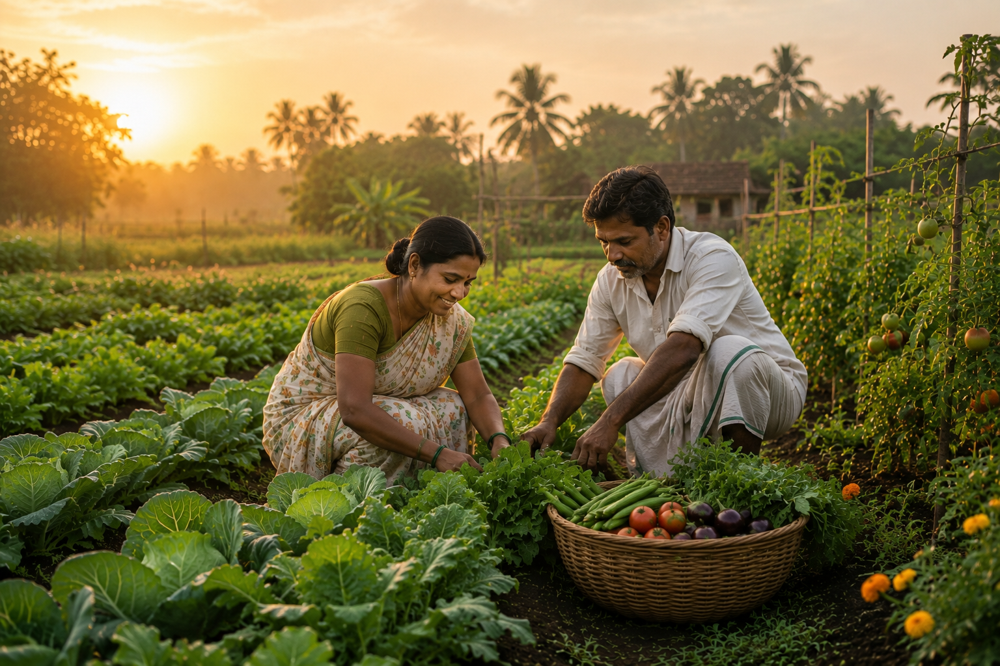
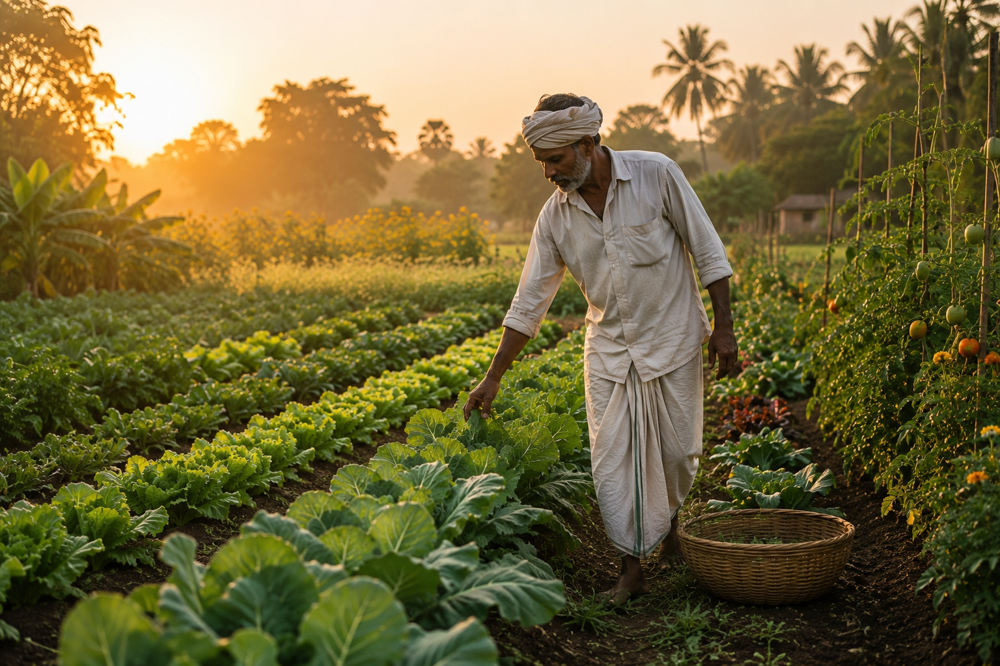

Naturally Cultivated
We partner with growers who embrace responsible farming practices and cultivate produce with respect for nature.
Every relationship begins with trust. Ours begins in the field—with farming families who cultivate produce with care, respect for nature and a deep commitment to sustainable agriculture.
We partner with growers who value quality over shortcuts, ensuring every harvest reaching your business reflects the same dedication from farm to table.


Our journey began with a simple belief—that exceptional produce starts with exceptional relationships. Rather than sourcing through multiple intermediaries, we work closely with farming families who share our commitment to natural cultivation and responsible farming practices.
Every harvest reflects months of dedication, careful cultivation and respect for the land. We visit farms, understand seasonal cycles and build long-term partnerships based on mutual trust rather than one-time transactions.
This close connection allows us to deliver produce that is fresh, responsibly cultivated and consistently reliable for restaurants, hotels, caterers, corporate cafetarias and institutions that value quality above all else.
Everything we do is guided by a few simple principles that help us earn the trust of our farmers and customers alike.
We partner with growers who embrace responsible farming practices and cultivate produce with respect for nature.
Long-term relationships with farmers built on fairness, transparency and mutual respect.
Efficient sourcing and careful handling help preserve freshness from harvest to your kitchen.
Consistent quality you can rely on, whether you're serving ten guests or ten thousand.
Whether you're sourcing fresh produce for a hotel, restaurant, catering service, temple or institution, we're here to understand your requirements and build a reliable partnership that grows with your business.